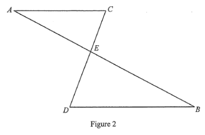

In Figure 2, $AB$ and $CD$ intersect at the point $E$. It is given that $AC\,/\!/\,DB$.
(a) Prove that $\triangle ACE \sim \triangle BDE$. [3 marks]
(b) Suppose that $AB = 20$ cm, $AC = 10$ cm, $BD = 15$ cm and $CE = 7$ cm. Is $\triangle BDE$ a right-angled triangle? Explain your answer. [5 marks]

Since $AC\,/\!/\,DB$ and $AB$ is a transversal:
$\angle CAE = \angle DBE$ (alt. $\angle$s, $AC\,/\!/\,DB$)
Since $AB$ and $CD$ intersect at $E$ :
$\angle AEC = \angle BED$ (vert. opp. $\angle$s)
Then
$\angle ACE = \angle BDE$ ($\angle$ sum of $\triangle$)
$\therefore \triangle ACE \sim \triangle BDE$ (A.A.A.)
From the similarity proved in (a):
$$\frac{BE}{BD}=\frac{AE}{AC}\quad\text{and}\quad \frac{AE}{AC}=\frac{CE}{DE}$$
The most useful ratio here is
$$\frac{BE}{BD}=\frac{AE}{AC}$$
because $BD$, $AC$ are given, and $AE$, $BE$ are linked by $AE+BE=AB$.
Let $AE = x$ cm, so $BE = 20-x$ cm.
$$\frac{BE}{BD}=\frac{AE}{AC}$$
$$\frac{20-x}{15}=\frac{x}{10}$$
$$10(20-x)=15x \;\Rightarrow\; 200-10x=15x$$
$$x = \frac{200}{25}=8 \text{ cm}$$
So $AE = 8$ cm and $BE = 20-8=12$ cm.
Check the converse of the Pythagorean theorem on $\triangle ACE$:
$AC^2 = 10^2 = 100$
$AE^2+CE^2 = 8^2+7^2 = 64+49 = 113$
Since $AE^2+CE^2 = 113 \ne 100 = AC^2$, $\triangle ACE$ is not a right-angled triangle.
(Equivalently, $AC > AE > CE$ and the largest-angle test fails.)
Answer (a): $\triangle ACE \sim \triangle BDE$ (A.A.A.) — as shown in Step 1.
Answer (b): By (a), $\triangle BDE \sim \triangle ACE$; since $\triangle ACE$ is not right-angled (as $8^2+7^2 \ne 10^2$), $\triangle BDE$ is NOT a right-angled triangle.
| Part | Marking scheme | Marks |
|---|---|---|
| (a) | Correct proof with correct reasons | 2 |
| (a) | Correct proof without reasons | 1 |
| (b) | Set up ratio and find $AE=8$ cm | 1M |
| (b) | Show $AE^2+CE^2\ne AC^2$ | 1M |
| (b) | Conclude both triangles not right-angled | 1A |
Question. In the figure, \(\triangle ABC\sim\triangle DEF\) with \(AB=6\), \(BC=9\), \(AC=12\) and \(DE=8\). Find \(EF\) and \(DF\), and determine whether \(\triangle DEF\) is right-angled.